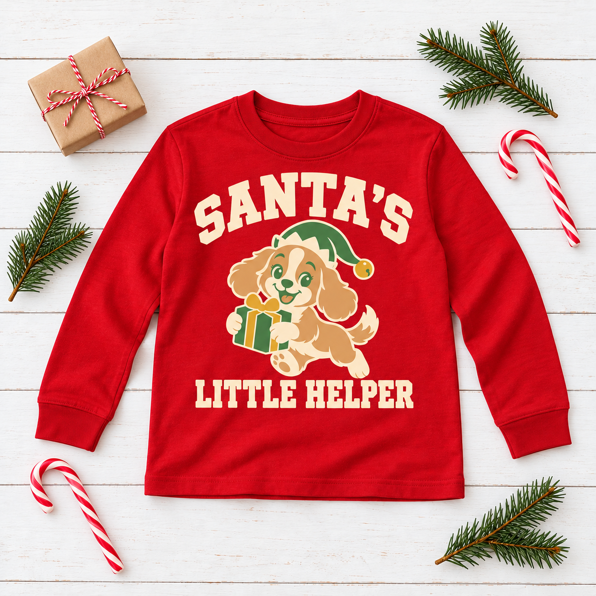

04Realizzata
Natale
Santa's Little Helper - t-shirt bambino
T-shirt bambino MANICHE LUNGHE 100% cotone, due versioni: Rabbit Skins 2-6 anni e Bella+Canvas Youth 6-12 anni (produzione USA)
Colori: Black, Navy, Red
Frase natalizia per bambini tra le piu' vendute; su maglia rossa o blu e' perfetta per le foto di famiglia.
